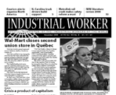

Submitted on Thu, 12/11/2008 - 6:30pm

UPDATE and Further Call to Action!!!
First, we would like to extend thanks to all of you that have been calling
and texting store manager Gwen Krueger this past week and demanding she pay Anna
what is owed.
Yesterday, Anna was called into a meeting with Krueger and her District
Manager, Mark Ormsbee. Krueger used this meeting as an opportunity to lie about
the facts in order to cover her hide. Ormsbee, expectantly, sided with Krueger
and made the mistake of refusing to pay Anna her money.
We need to let Mark Ormsbee to know that this is not over until Anna
receives every penny that Starbucks owes her so she can care for her family in
the holiday season.
Call and/or Text District Manager, Mark Ormsbee, at 1-917-841-4198 and
continue to call and text Store Manager, Gwen Krueger, at 1-551-497-0127. This
action for justice will take place from December 11th - December
19th.
BACKGROUND
Submitted on Fri, 12/05/2008 - 9:27pm
Fellow Union Members and Friends:
Anna Hurst is a New York City barista, Starbucks Union member, and a single
mother of two.
One day in August, Anna went home ill from work at Starbucks. In
retaliation, her store manager - abruptly and without notice - denied her any
work hours for two full weeks.
Anna needs the money she's owed to put food on the table, pay her bills,
and buy Christmas presents for her children.
Call and/or text message store manager Gwendolyn Krueger today at
551-497-0127 and demand that Starbucks pay Anna what she is owed!
This action for dignity will last seven days, Dec. 5-Dec. 12
Thank you for your solidarity and please share this e-mail with friends and
co-workers.
Submitted on Fri, 12/05/2008 - 12:42am
Headlines:
- Ontario Farm Workers Win Right to Organize
- G20 Defends Capitalism
- Coors' Colorado Right-to-work Plan Defeated
- Minneapolis Starbucks baristas join IWW
Features:
- Economic Meltdown Global
- Online Picket Line: The Internet Didn't Make Obama Win
- Proposition K fails, sex workers continue to organize in San Fran
- Review: A Union Man Won't Quit
Download a free PDF copy of this issue.
Submitted on Fri, 11/21/2008 - 1:00am
Headlines:
- Wal-Mart closes second union store in Québec
- Aboriginal workers organize in Canada
- Zimbabwe unions condemn deal with Mugabe
- Crisis a product of capitalism
Features:
- Pakistani women need rights respected every day
- Metrolink rail crash makes safety reform a must
- Mentally ill workers an 'indicator species' for fairness on the job
- The IWW: Literature Review 2008
Download a free PDF copy of this issue.
Submitted on Wed, 11/12/2008 - 9:27pm

Fellow Workers:
It is with great enthusiasm that I would like to announce the launch of the new IWW Literature Department Website at
http://store.iww.org!
This project has been under development for some time, but now our online store has been streamlined and is chock full of sweet IWW goodies including many fine books about the IWW, featuring literature written by members, as well as many tittles about the Labor Movement in general.
We now have over 200 items listed, with more items still going up. This is the perfect place to get a copy of the brand new Wobblies
& Zapatistas, Labor Law for the Rank and Filer, or that IWW t-shirt
that you have always wanted!
But, even better, for the rest of the month of November, we will celebrate the launch of the new website by offering a coupon for 10% off any order over $20.00! Use coupon code Remember when checking out, because in November we Remember all of the other workers who fought so hard for us in the past...
Please forward this on to family and friends, and anyone who loves the
IWW!
So, go on over to
HTTP://STORE.IWW.ORG today and get 10% off your entire order of $20.00 or more with coupon code Remember
Walt Weber
Philadelphia IWW Branch Secretary
Chair IAC
walt.weber.iww [at] gmail.com